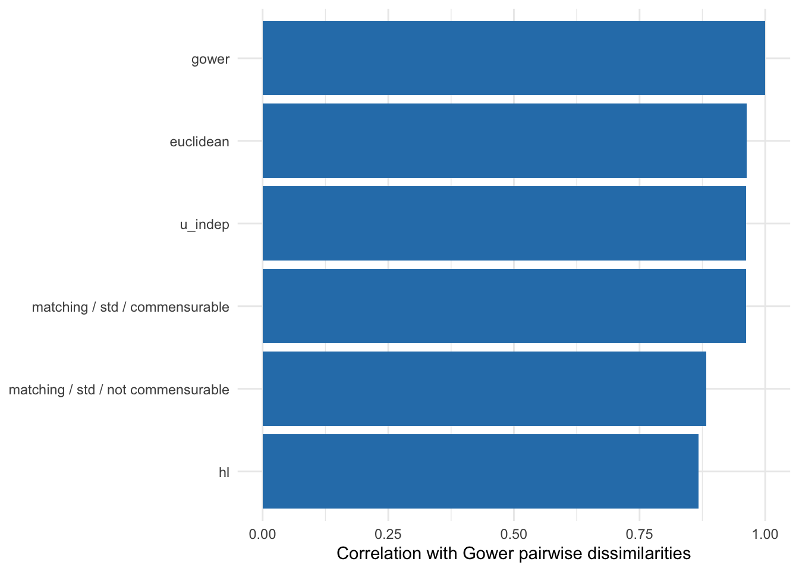

manydist: benchmarking distance choices
1 Overview
Mixed-type data do not determine a unique dissimilarity. Different choices about scaling, categorical comparisons, commensurability, and associations can produce different geometries and, consequently, different learning results.
manydist provides two helpers for studying these choices systematically:
-
all_dist_method_specs()constructs tables of valid specifications; -
benchmark_mdist()evaluatesmdist()once for every row of such a table.
This guide shows how to define a manageable candidate set, run it safely, inspect failures, and compare the resulting dissimilarities. The benchmark constructs distances; the final choice should still be based on the intended downstream task and an appropriate validation design.
2 Setup
We use complete cases from palmerpenguins. The species label is retained for later use, but the first benchmark is deliberately unsupervised and uses only the predictors.
penguins_small <- palmerpenguins::penguins |>
dplyr::select(
species,
bill_length_mm,
bill_depth_mm,
flipper_length_mm,
body_mass_g,
island,
sex
) |>
tidyr::drop_na()
penguin_x <- penguins_small |>
dplyr::select(-species)
dplyr::glimpse(penguin_x)Rows: 333
Columns: 6
$ bill_length_mm <dbl> 39.1, 39.5, 40.3, 36.7, 39.3, 38.9, 39.2, 41.1, 38.6…
$ bill_depth_mm <dbl> 18.7, 17.4, 18.0, 19.3, 20.6, 17.8, 19.6, 17.6, 21.2…
$ flipper_length_mm <int> 181, 186, 195, 193, 190, 181, 195, 182, 191, 198, 18…
$ body_mass_g <int> 3750, 3800, 3250, 3450, 3650, 3625, 4675, 3200, 3800…
$ island <fct> Torgersen, Torgersen, Torgersen, Torgersen, Torgerse…
$ sex <fct> male, female, female, female, male, female, male, fe…3 Constructing a candidate set
all_dist_method_specs() returns one specification per row. Preset rows use the preset column, whereas component rows describe a custom combination of method_cat, method_num, and commensurable.
all_dist_method_specs(mode = "presets_only") |>
dplyr::select(
spec_type,
preset,
method_cat,
method_num,
commensurable
)# A tibble: 10 × 5
spec_type preset method_cat method_num commensurable
<chr> <chr> <chr> <chr> <lgl>
1 preset euclidean <NA> <NA> NA
2 preset gower <NA> <NA> NA
3 preset hl <NA> <NA> NA
4 preset u_dep <NA> <NA> NA
5 preset u_indep <NA> <NA> NA
6 preset u_mix <NA> <NA> NA
7 preset dkss <NA> <NA> NA
8 preset gudmm <NA> <NA> NA
9 preset mod_gower <NA> <NA> NA
10 preset custom <NA> <NA> NA It is usually better to begin with a small set of substantively different choices than to run every possible combination. Here we compare four presets and two custom specifications.
candidate_specs <- dplyr::bind_rows(
all_dist_method_specs(
mode = "presets_only",
preset = c("gower", "u_indep", "euclidean", "hl")
),
tibble::tibble(
spec_type = "component",
preset = "custom",
method_cat = "matching",
method_num = "std",
commensurable = c(FALSE, TRUE)
)
)
candidate_specs# A tibble: 6 × 5
spec_type preset method_cat method_num commensurable
<chr> <chr> <chr> <chr> <lgl>
1 preset euclidean <NA> <NA> NA
2 preset gower <NA> <NA> NA
3 preset hl <NA> <NA> NA
4 preset u_indep <NA> <NA> NA
5 component custom matching std FALSE
6 component custom matching std TRUE This explicit table is useful for reproducibility: it records exactly which distance definitions entered the comparison.
4 Running the benchmark
benchmark_mdist() applies mdist() to each specification. An error in one row does not stop the remaining computations.
distance_benchmark <- benchmark_mdist(
x = penguin_x,
specs = candidate_specs
)
distance_benchmark |>
dplyr::select(
spec_type,
preset,
method_cat,
method_num,
commensurable,
ok,
error
)# A tibble: 6 × 7
spec_type preset method_cat method_num commensurable ok error
<chr> <chr> <chr> <chr> <lgl> <lgl> <chr>
1 preset euclidean <NA> <NA> NA TRUE <NA>
2 preset gower <NA> <NA> NA TRUE <NA>
3 preset hl <NA> <NA> NA TRUE <NA>
4 preset u_indep <NA> <NA> NA TRUE <NA>
5 component custom matching std FALSE TRUE <NA>
6 component custom matching std TRUE TRUE <NA> The returned tibble adds three columns:
-
resultcontains theMDistobject, or the captured error; -
okindicates whether computation succeeded; -
errorcontains the error message for an unsuccessful row.
distance_benchmark |>
dplyr::count(ok)# A tibble: 1 × 2
ok n
<lgl> <int>
1 TRUE 6Failed specifications remain easy to inspect.
distance_benchmark |>
dplyr::filter(!ok) |>
dplyr::select(
preset,
method_cat,
method_num,
commensurable,
error
)# A tibble: 0 × 5
# ℹ 5 variables: preset <chr>, method_cat <chr>, method_num <chr>,
# commensurable <lgl>, error <chr>This behavior is especially helpful for larger sensitivity analyses, where some methods may be incompatible with the variables in a particular data set.
5 Summarising the resulting geometries
The successful MDist objects can be extracted from the result list-column and analysed like any other computed object.
distance_values <- function(x) {
distance_matrix <- as.matrix(x$distance)
distance_matrix[lower.tri(distance_matrix)]
}
successful_distances <- distance_benchmark |>
dplyr::filter(ok) |>
dplyr::mutate(
method = dplyr::if_else(
spec_type == "preset",
preset,
paste(
method_cat,
method_num,
dplyr::if_else(
commensurable,
"commensurable",
"not commensurable"
),
sep = " / "
)
),
values = purrr::map(result, distance_values),
mean_distance = purrr::map_dbl(values, mean),
sd_distance = purrr::map_dbl(values, stats::sd)
)
successful_distances |>
dplyr::select(method, mean_distance, sd_distance)# A tibble: 6 × 3
method mean_distance sd_distance
<chr> <dbl> <dbl>
1 euclidean 3.99 1.43
2 gower 0.355 0.165
3 hl 2.94 1.17
4 u_indep 6.02 2.71
5 matching / std / not commensurable 5.68 2.63
6 matching / std / commensurable 6.02 2.71 The absolute scale can differ across specifications. Geometry can therefore also be compared through the association between corresponding pairwise dissimilarities. The following example uses Gower dissimilarity as a reference.
gower_values <- successful_distances |>
dplyr::filter(preset == "gower") |>
dplyr::pull(values) |>
purrr::pluck(1)
geometry_agreement <- successful_distances |>
dplyr::transmute(
method,
correlation_with_gower = purrr::map_dbl(
values,
~ stats::cor(.x, gower_values)
)
)
geometry_agreement# A tibble: 6 × 2
method correlation_with_gower
<chr> <dbl>
1 euclidean 0.963
2 gower 1
3 hl 0.867
4 u_indep 0.962
5 matching / std / not commensurable 0.883
6 matching / std / commensurable 0.962
geometry_agreement |>
ggplot2::ggplot(
ggplot2::aes(
x = stats::reorder(method, correlation_with_gower),
y = correlation_with_gower
)
) +
ggplot2::geom_col(fill = "#2C7FB8") +
ggplot2::coord_flip() +
ggplot2::labs(
x = NULL,
y = "Correlation with Gower pairwise dissimilarities"
) +
ggplot2::theme_minimal()
A high correlation indicates similar pairwise ordering, not necessarily equivalent downstream performance. Scale summaries and geometry agreement are diagnostics, not selection criteria on their own.
6 Response-aware candidates
Some specifications can use a response when constructing the dissimilarity. They can be listed with mode = "response_aware_only".
response_specs <- all_dist_method_specs(
mode = "response_aware_only"
) |>
dplyr::filter(
spec_type == "preset",
preset %in% c("u_dep", "u_mix")
)
response_specs# A tibble: 2 × 5
spec_type preset method_cat method_num commensurable
<chr> <chr> <chr> <chr> <lgl>
1 preset u_dep <NA> <NA> NA
2 preset u_mix <NA> <NA> NA When the response is supplied to benchmark_mdist(), it is used only by response-aware components and is not treated as an ordinary predictor.
response_benchmark <- benchmark_mdist(
x = penguins_small,
response = species,
specs = response_specs
)
response_benchmark |>
dplyr::select(preset, ok, error)# A tibble: 2 × 3
preset ok error
<chr> <lgl> <chr>
1 u_dep TRUE <NA>
2 u_mix TRUE <NA> If response-aware distances are compared by predictive performance, their construction must occur inside each resample. Constructing them once from the full outcome vector would leak assessment information into training.
7 Scaling up a comparison
The same workflow can be expanded by filtering the full specification table. For example:
larger_specs <- all_dist_method_specs(
mode = "full",
method_cat = c("matching", "tvd"),
method_num = c("std", "robust"),
commensurable = c(FALSE, TRUE)
)
larger_benchmark <- benchmark_mdist(
x = penguins_small,
response = species,
specs = larger_specs
)Before expanding the grid, decide what the benchmark is intended to measure:
- for clustering, compare stability, separation, or external labels when legitimately available;
- for prediction, compare candidates through resampling and preserve a final test set;
- for exploratory analysis, inspect whether substantive conclusions are stable across plausible distance definitions;
- always keep unsuccessful rows and their messages as part of the audit trail.
The clustering and supervised-learning guides show how MDist specifications enter those downstream workflows.